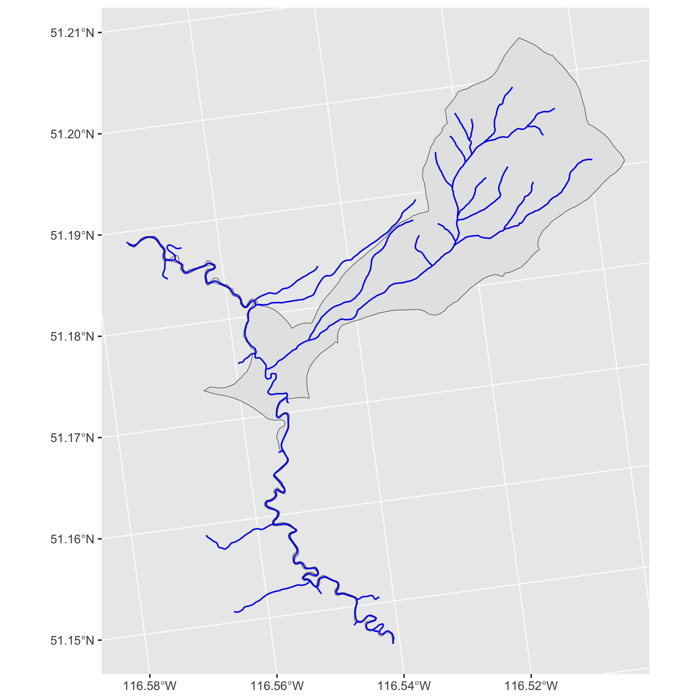

fwatlasbc is an R package for querying data from the Freshwater Atlas (FWA) of British Columbia. Spatial data are returned as simple features.
fwatlasbc wraps fwapgr an R package that uses the fwapg API.
Installation
You can install the latest version of fwatlasbc from GitHub with:
# install.packages("devtools")
devtools::install_github("poissonconsulting/fwatlasbc")Demonstration
Find stream names using regular expression. There may be more than one stream name that matches the regular expression.
library(fwatlasbc)
streams <- fwa_find_stream_names("steep c")
streams
#> # A tibble: 2 × 1
#> stream_name
#> <chr>
#> 1 Steep Canyon Creek
#> 2 Steep CreekAdd blue line keys (blk) to stream names. There may be multiple streams with the same name.
blks <- fwa_add_blks_to_stream_name(streams)
blks
#> # A tibble: 4 × 2
#> stream_name blk
#> <chr> <int>
#> 1 Steep Canyon Creek 360883036
#> 2 Steep Creek 356362258
#> 3 Steep Creek 356534225
#> 4 Steep Creek 356570155
blks <- blks[blks$blk == 356534225, ]Alternatively get the nearest blue line key and river meter (rm) from the longitude and latitude. The river meter is the distance in meters as the fish swims from the mouth of the river. The distance_to_lon_lat is the how far the original point was from the stream in meters.
fwa_add_blk_to_lon_lat(data.frame(lon = -132.26, lat = 53.36))
#> Simple feature collection with 1 feature and 5 fields
#> Geometry type: POINT
#> Dimension: XY
#> Bounding box: xmin: 585153.6 ymin: 946162.9 xmax: 585153.6 ymax: 946162.9
#> Projected CRS: NAD83 / BC Albers
#> # A tibble: 1 × 6
#> lon lat blk rm distance_to_lon_lat geometry
#> <dbl> <dbl> <int> <dbl> <dbl> <POINT [m]>
#> 1 -132. 53.4 360824839 1118. 508. (585153.6 946162.9)Get watershed (by aggregating fundamental watersheds) for a blue line key and river meter (by default 0). If it errors try increasing the river meter.
wshed <- fwa_add_watershed_to_blk(blks)
wshed
#> Simple feature collection with 1 feature and 3 fields
#> Geometry type: POLYGON
#> Dimension: XY
#> Bounding box: xmin: 1656219 ymin: 725423.4 xmax: 1661727 ymax: 732146.6
#> Projected CRS: NAD83 / BC Albers
#> # A tibble: 1 × 4
#> stream_name blk rm geometry
#> <chr> <int> <dbl> <POLYGON [m]>
#> 1 Steep Creek 356534225 0 ((1658107 728965.2, 1658107 728965.2, 1658180 728…Get stream network for the watershed polygon. Note that rm is from the original watershed while downstream/upstream_route_measure are the equivalents for the stream segment in the network.
network <- fwa_add_collection_to_polygon(wshed, "stream_network")
network
#> Simple feature collection with 76 features and 29 fields
#> Geometry type: LINESTRING
#> Dimension: XY
#> Bounding box: xmin: 1656200 ymin: 725423.4 xmax: 1661368 ymax: 731603
#> Projected CRS: NAD83 / BC Albers
#> # A tibble: 76 × 30
#> stream_name blk rm blue_line_key blue_line_key_50k
#> <chr> <int> <dbl> <int> <int>
#> 1 Steep Creek 356436505 0 356436505 NA
#> 2 Steep Creek 356526193 0 356526193 873
#> 3 Steep Creek 356566041 0 356566041 1130
#> 4 Steep Creek 356549188 0 356549188 1131
#> 5 Steep Creek 356566041 0 356566041 1130
#> 6 Steep Creek 356394005 0 356394005 NA
#> 7 Steep Creek 356534225 0 356534225 1142
#> 8 Steep Creek 356549188 0 356549188 1131
#> 9 Steep Creek 356526193 0 356526193 873
#> 10 Steep Creek 356566041 0 356566041 1130
#> # ℹ 66 more rows
#> # ℹ 25 more variables: downstream_route_measure <dbl>, edge_type <dbl>,
#> # feature_code <chr>, feature_source <chr>, fwa_watershed_code <chr>,
#> # gnis_id <int>, gnis_name <chr>, gradient <dbl>, left_right_tributary <chr>,
#> # length_metre <dbl>, linear_feature_id <int>, local_watershed_code <chr>,
#> # localcode_ltree <chr>, stream_magnitude <dbl>, stream_order <dbl>,
#> # upstream_route_measure <dbl>, waterbody_key <dbl>, …Convert the stream network into a table of blue line keys with regularly spaced river meters starting at 0.
# rms <- fwa_convert_stream_network_to_rms(network, interval = 100)
# rmsPlot the watershed, network and river meters.
ggplot2::ggplot() +
ggplot2::geom_sf(data = wshed) +
ggplot2::geom_sf(data = network, color = "blue") +
# ggplot2::geom_sf(data = rms) +
NULL
Creditation
fwatlasbc relies on fwapg API which is created, maintained and hosted by Simon Norris at Hillcrest Geographics.
Contribution
Please report any issues.
Pull requests are always welcome.
Code of Conduct
Please note that fwatlasbc is released with a Contributor Code of Conduct. By contributing to this project, you agree to abide by its terms.